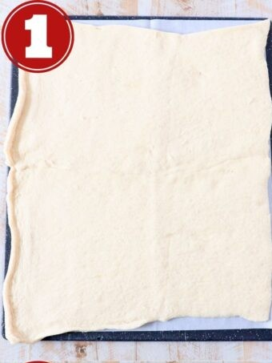
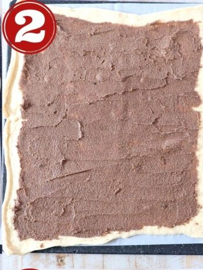
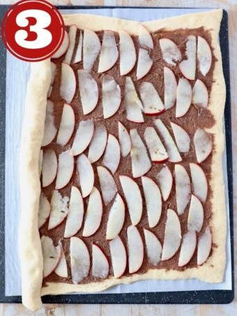

Cinnamon Roll Wreath & Apples
สูตรทำขนมอบสำหรับเทศกาล

ส่วนผสม (Ingredients)
Crescent roll dough
Granulated sugar
Brown sugar
Ground cinnamon
Unsalted butter
Apples
Cream cheese
วิธีทำ (Step by Step)

1. คลี่แป้งและนำมาเชื่อมต่อกันเป็นแผ่นสี่เหลี่ยมผืนผ้าขนาดใหญ่บนกระดาษไข

2. ทาเนยที่ผสมกับน้ำตาลและชินนามอนให้ทั่วแผ่นแป้ง

3. หั่นแอปเปิลเป็นชิ้นบางๆ แล้ววางเรียงกระจายให้ทั่ว โดยไม่ให้ทับซ้อนกันมาก
Recipe by Whitney Bond - Coded for class assignment.